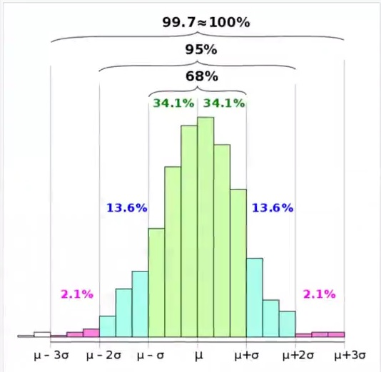
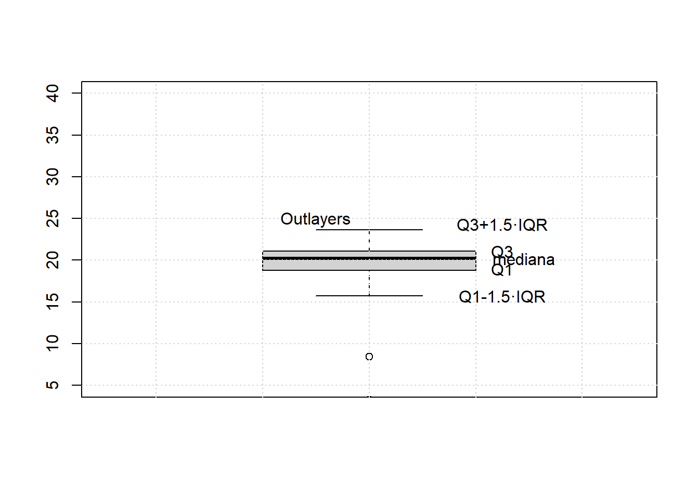

restaDosNumeros<-function(x,y){
z <- x-y
return(z)
}Funciones en R
Vamos a crear nuestra primera función para restar dos números.
restaDosNumeros(10,7)[1] 3# tambien podemos invertir el orden
restaDosNumeros(y=10,x=7)[1] -3Podemos definir parámetros opcionales con un valor por defecto.
restaDosNumerosConEscala<-function(x,y,scale = 1){
z <- (x-y)*scale
return(z)
}restaDosNumerosConEscala(10,7)[1] 3Estimador estadístico
Un estimador es un estadístico al que se le exigen ciertas condiciones para que pueda calcular con ciertas garantías ciertos parámetros de una población.
Es decir, un estimador es un estadístico. Ahora bien, no es un estadístico cualquiera. Es un estadístico con ciertas propiedades. Un ejemplo podría ser la media o la varianza. Estas métricas tan conocidas, son estimadores.
En primer lugar, debemos entender que cuando realizamos un estudio de investigación, normalmente, queremos estudiar cierto parámetro.
Por ejemplo, queremos estudiar cuál es la altura media de los árboles en cierta ciudad. La variable objeto de estudio es la altura de los árboles en cierta ciudad. Mientras que, el parámetro es la altura media de los árboles de esa ciudad.
Vamos a ver varios ejemplos de funciones en R utilizando estimadores estadísticos.
Un estimador es un estadístico (esto es, una función de la muestra) usado para estimar un parámetro desconocido de la población.
Un estimador es una función que coge valores de una muestra de datos y hace un resumen, estima un valor que define la muestra.
Como ejemplo de población utilizaremos el siguiente vector de tiempos de duración de un evento.
activities<-read.csv('data/activities_strava.csv', stringsAsFactor=T)
activities$duracion_minutos <- activities$Elapsed.Time/60
# Duracion de todas las actividades realizadas por la tarde
duracion_afternoon <- activities[activities$Activity.Name=='Afternoon Ride','duracion_minutos']Media aritmética
En matemáticas y estadística, la media aritmética (también llamada promedio o media) de un conjunto finito de números es el valor característico de una serie de datos cuantitativos, objeto de estudio que parte del principio de la esperanza matemática o valor esperado, se obtiene a partir de la suma de todos sus valores dividida entre el número de sumandos.
[ {x} = () {i=1} ^ N x_i\]
media aritmética se suman todos los elementos Xi y se divide entre el número de muestras
En R la función de la media se podría definir así:
# variable my_media, va a recibir un vector x
my_mean <- function(X){
# Itera en todos los elementos de x y los sumamos entre si
m <- 0
for (xi in X){
m <- m+xi
}
# es equivalente al for m <- sum(X)
# Se devuelve m/numero de muestras de x
return(m/length(X))
}# calcula la media de la columna duracion_afternoon por medio de una función hecha
my_mean(duracion_afternoon)[1] 50.32083# Funcion interna de R
mean(duracion_afternoon)[1] 50.32083Evidentemente R tiene una función para la media cuya ejecución es mucho más rápida que nuestra función:
# la media es muy sencible a outlayers
mean(duracion_afternoon)[1] 50.32083Media truncada
La media truncada se utiliza cuando queremos quitar los \(2p\) elementos más extremos (\(p\) elementos por arriba y \(p\) por abajo) del array del cómputo de la media. La media truncada es un estimador más robusto que la media.
\[ {x} = _{i=p+1}^{N-p} x_i\]
Los valores atípicos pueden afectar la media (especialmente si solo hay uno o dos valores muy grandes), por lo que una media recortada a menudo puede ser más adecuada para conjuntos de datos con valores altos o bajos erráticos o para distribuciones extremadamente sesgadas.
Estas medias se expresan en porcentajes. El porcentaje le dice qué porcentaje de datos eliminar. Por ejemplo, con una media recortada del 5 %, se excluyen el 5 % más bajo y el 5 % más alto de los datos. La media se calcula a partir del 90 % restante de los puntos de datos.
En R se utiliza la función \(mean\) con el parámetro \(trim\) que indica que porcentaje de elementos del array eliminamos antes de hacer la media
# Como el primer valor de la secuencia es atipico, le decimos que inicie de la posicion 2 en adelante
mean(duracion_afternoon[2:length(duracion_afternoon)])[1] 21.05123# He quitado los valores extremos, el 20% de las muestras mas altas y el 20 de las muestras mas bajas
mean(duracion_afternoon,trim = 0.2)[1] 20.32037La fracción (0 a 0,5) de las observaciones que se recortarán de cada extremo de x antes de calcular la media. Los valores de recorte fuera de ese rango se toman como el punto final más cercano
?meanstarting httpd help server ... donefiltrar para que me queden los valores <= 100
duracion_afternoon_filtrado <- duracion_afternoon[duracion_afternoon <= 100]
duracion_afternoon_filtrado [1] 15.733333 69.500000 17.433333 8.466667 19.966667 21.066667 19.750000
[8] 22.016667 20.450000 19.866667 18.233333 20.383333 20.050000 21.500000
[15] 18.750000 21.616667 20.350000 18.533333 20.350000 20.983333 19.366667
[22] 20.900000 19.866667 3.283333 22.700000 23.650000 23.616667which nos muestra la secuencia
# No me muestra el primero ya que ese es el valor atipico y no está en el filtro
which(duracion_afternoon<=100) [1] 2 3 4 5 6 7 8 9 10 11 12 13 14 15 16 17 18 19 20 21 22 23 24 25 26
[26] 27 28Varianza / desviación típica
La variancia (que suele representarse como \(\sigma ^{2}\),\(s^2\) o \(Var(X)\)) de una variable aleatoria es una medida de dispersión definida como la esperanza del cuadrado de la desviación de dicha variable respecto a su media. O en pocas palabras, es la media de los residuos al cuadrado.
Es decir, define lo mucho que varía una variable aleatoria respecto a la media: * Si todos los valores son iguales, no hay variación, la varianza es 0. * Si los valores son muy diferentes unos de otros la varianza es alta.
El motivo de usar el cuadrado es porque queremos ver lo mucho que cambia cada elemento sin importar su signo, si cambia por arriba o por abajo, el signo se elimina. El hecho de ser una función al cuadrado también da mayor importancia a los valores extremos. El problema que esto origina es que las unidades de la varianza están también al cuadrado, por ello, a veces se utiliza la desviación típica.
La raíz cuadrada de la varianza es la desviación típica que indica como de típica es la desviación respecto a la media en sus mismas unidades.
\[ Var[x] = _{i=1}^N ( x_i-{x} )^2 \]
donde: \[ x_i = valor de la muestra\] \[ ({x}) = valor de la media o el valor que puedo esperar (Esperanza)\]
Se suman todos los resultados de: \[( x_i-{x})^2 \]
Se divide entre: \[\]
Nos da como resultado: \[ Var[x] = \]
La varianza es una medida de dispersión que representa la variabilidad de una serie de datos respecto a su media. Formalmente se calcula como la suma de los residuos al cuadrado divididos entre el total de observaciones.
En R la función de la varianza se podría definir así:
myVar <- function(X){
m <- mean(X)
v <- 0
for(xi in X){
v <- v + (xi - m)^2
}
total <- v / (length(X) -1)
return(total)
}# la varianza son minutos al cuadrado
print(paste("La varianza es:", myVar(duracion_afternoon)))[1] "La varianza es: 24095.6835108025"# La desviacion tipica es la raiz cuadrada de la varianza, la desviacion tipica son minutos
print(paste("La desviación típica es:",sqrt(myVar(duracion_afternoon))))[1] "La desviación típica es: 155.227843864438"Evidentemente R tiene una función para la varianza (var) y la desviación típica (sd) cuya ejecución es mucho más rápida que nuestra función:
# Funciones propias de R
# varianza minutos al cuadrado
print(paste("La varianza es:",var(duracion_afternoon)))[1] "La varianza es: 24095.6835108025"# La desviacion tipica es la raiz cuadrada de la varianza, la desviacion tipica son minutos
print(paste("La desviación típica es:",sd(duracion_afternoon)))[1] "La desviación típica es: 155.227843864438"cuando trabajamos con distribuciones gausianas, la media y la varianza suelen ser buenas porque aproximadamente el 96% o 95% de los datos, está entre 1 y 2 de desviaciones estandar
- si tenemos una deviacion tipica hacia la derecha e izquierda tenemos el 68% de los datos
- si tenemos 2 desviaciones tipicas hacia la derecha e izquierda tenemos el 95% de los datos
- si tenemos 3 desviaciones tipicas hacia la derecha e izquierda tenemos el 99.7% que equivale al 100% de los datos

Mediana
La mediana es el valor de una distribución tal que la mitad de los elementos son superiores (por encima) y la mitad son inferiores (por debajo.
cuando tenemos distribuciones simetricas, la media y la mediana son iguales, en distribuciones gausianas
# tenemos una secuencia de numeros sencilla longitud impar
my_seq <- c(5, 7, 10, 6, 1)
# la mediana es el numero a partir del cual hay tamtos elementos mayores como menores
# verificamos si la longitud es par o impar
# 1. ordenamos el vector
sort(my_seq)[1] 1 5 6 7 10# 2. sacamos la longitud del vector
length(my_seq)[1] 5# 3. dividomos la longitud de ese vector entre 2
length(my_seq)/2[1] 2.5# 4. para quedarnos con la parte mas baja o piso
floor(length(my_seq)/2)[1] 2# para quedarnos con la parte mas alta o techo
# selling(length(my_seq)/2)
# 5. como el arraid inicia en 1 hay que sumar 1
floor(length(my_seq)/2) + 1[1] 3# Finalmente la mediana es el valor que está en esa posicion
sort(my_seq)[floor(length(my_seq)/2)+1][1] 6# Cuando la longitud del vector es par, se divide entre 2, se coge la posicion anterior y la siguiente, y se calcula la media
# tenemos una secuencia de numeros sencilla longitud impar
my_seq1 <- c(5, 7, 10, 6, 1, 4)
# Creo la funcion
myMedian <- function(X){
# ordenar el vector
x <- sort(X)
i <- ((length(x)+1)/2)
# verificar si el vector es paro impar
if(round(i)==i){
# en el caso de impar
my_median <- (x[i])
}else{
# en el caso de par
my_median <- ((x[floor(i)]+x[ceiling(i)])/2)
}
return(my_median)
}
myMedian(my_seq1)[1] 5.5# mediana
myMedian(duracion_afternoon)[1] 20.35Como siempre es aconsejable utilizar la función que R ha preparado
# mediana
median(duracion_afternoon)[1] 20.35Media y mediana no tienen porqué ser iguales. Ejemplo salarios brutos españoles de 2020 Fuente: * Salario medio: 25.165,51€/mes * Salario mediano: 20.920,12€/mes
Esto indica que hay poca gente con sueldos muy altos que sube la media, la distribución no es simétrica.

Cuartiles
Los cuartiles son los tres valores que dividen un conjunto de datos ordenados en cuatro partes porcentualmente iguales. * Q1: El 25% de las muestras se encuentran por debajo del primer cuartil. * Q2: El 50% de las muestras se encuentran por debajo del segundo cuartil. Este valor también se le conoce como mediana * Q3: El 75% de las muestras se encuentran por debajo del tercer cuartil. * Rango intercuantílico (IQR): Q3-Q1
Una forma muy práctica de mostrar estos valores es con el diagrama de cajas (boxplot en inglés). El boxplot se compone de: * Caja (Box): El lado superior indica el lugar de Q3, el lado inferior es Q1 y la línea que lo atraviesa es Q2 * Bigotes (Whiskers): Dos líneas que se exitienden 1.5 veces el IQR desde Q3 y desde Q1. * Valores atípicos (Outlayers): Valores que se encuentran fuera de los bigotes. Se llaman cuartiles porque nos deja los datos divididos en grupos
summary(duracion_afternoon) Min. 1st Qu. Median Mean 3rd Qu. Max.
3.283 19.212 20.350 50.321 21.529 840.600 X<-duracion_afternoon[duracion_afternoon<50]
# pinto la caja
boxplot(X, ylim=c(5,40))
grid()
# Q1
q1<-quantile(X,0.25)
# Q3
q3<-quantile(X,0.75)
# Calculo el rango intercuartilico
iqr<-q3-q1
# le doy un nombre al vector
names(iqr)<-"iqr"
q1 25%
18.90417 q3 75%
21.04583 iqr iqr
2.141667 text(1.25,q3,"Q3")
text(1.29,median(X),"mediana")
text(1.25,q1,"Q1")
text(1.25,q3+1.5*iqr,"Q3+1.5·IQR")
text(1.25,q1-1.5*iqr,"Q1-1.5·IQR")
text(0.9,q3+1.8*iqr,"Outlayers")
quantile(X) 0% 25% 50% 75% 100%
3.283333 18.904167 20.200000 21.045833 23.650000 summary(X) Min. 1st Qu. Median Mean 3rd Qu. Max.
3.283 18.904 20.200 19.188 21.046 23.650 ver las muestras entre el 10% y el 90%
quantile(X, c(0.1,0.5,0.9)) 10% 50% 90%
16.58333 20.20000 22.35833 ver cuartiles
quantile(X, c(0.25,0.5,0.75)) 25% 50% 75%
18.90417 20.20000 21.04583 ?boxplotQuantiles o percentiles
El percentil indica el porcentaje de muestras que se encuentran debajo de un umbral dado. Es igual al cuantil, solo que este está dado en tanto por 1 mientras que el percentil está dado en tanto por ciento.
Ejemplo:
Los percentiles se utilizan mucho para mostrar si el peso de un bebé es el correcto o se desvía mucho de lo esperado.  Fuente OMS
Fuente OMS
En R tenemos la función quantile()
# el 90% se ha tardado menos de 23 minutos o el 10% de las veces ha tardado mas de 23 minutos
quantile(duracion_afternoon,0.9) 90%
23.62667 Moda
rnorm: permite generar numeros de forma aleatoria que siguen una distribucion normal (distribucion gausiana con media y desviacion tipica)
runif: permite generar numeros aleatrorios que siguen una distribucion uniforme (que van de un numero a un numero)
Es el valor con mayor frecuencia en una distribución o más común.
# se define la semilla y los numeros son seudo aleatorios, siempre parten de un origen y los algoritnos consiguen la mayor aleatoriedad
# basicamente se hace para que los valores no cambien, para eso se define la semilla
set.seed(123)
# Creamos una secuencia de 40 números aleatorios de media 7 y desviacion tipica 2, se redondea para sacar el valor entero y con él hacer los calculos
vec<-round(rnorm(40,mean=7,sd=2))
vec [1] 6 7 10 7 7 10 8 4 6 6 9 8 8 7 6 11 8 3 8 6 5 7 5 6 6
[26] 4 9 7 5 10 8 6 9 9 9 8 8 7 6 6#Contamos las veces que aparece cada uno
# table, cuenta el numero de apariciones, es una matriz de conteos o frecuencias
myTable<-table(vec)
myTablevec
3 4 5 6 7 8 9 10 11
1 2 3 10 7 8 5 3 1 #Contamos las veces que aparece cada uno
summary(factor(vec)) 3 4 5 6 7 8 9 10 11
1 2 3 10 7 8 5 3 1 str(myTable) 'table' int [1:9(1d)] 1 2 3 10 7 8 5 3 1
- attr(*, "dimnames")=List of 1
..$ vec: chr [1:9] "3" "4" "5" "6" ...# nombre de la columna, devuelve el indice del maximo which.max
names(myTable)[which.max(myTable)][1] "6"# devuelve la posicion de la primera aparicion del mayor valor
v <- c(1, 4, 5, 1, 5)
which.max(v)[1] 3# devuelve todas las posiciones del mayor valor
v <- c(1, 4, 5, 1, 5)
which(v == max(v))[1] 3 5myTable["6"] 6
10 myTable[4] 6
10 print(paste("La posición del máximo es:",which.max(myTable)))[1] "La posición del máximo es: 4"print(paste("El número más común es:",names(myTable)[which.max(myTable)]))[1] "El número más común es: 6"print(paste("Ese número ha aparecido ",max(myTable),"veces"))[1] "Ese número ha aparecido 10 veces"